Trees and Binary Search Trees
Liting Zhang
University of West Florida
Applications of Trees
Hierarchical data
File systems
Organizational charts
Search and ordering
Binary search trees
Heaps
Databases: B-trees
Compilers: Abstract syntax trees
What Is a Tree?
A tree is a connected set of nodes and edges
It has no cycles
One node is the root
Every other node has exactly one parent
One path connects the root to each node
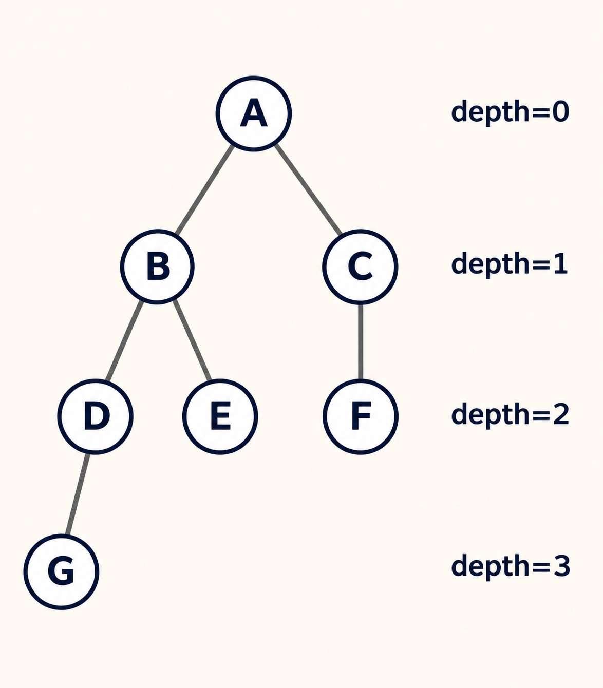
Tree Terminology
Root: topmost node of the tree
Internal node: a node with at least one child
Parent: node that has child nodes
Child: nodes derived from a parent
Leaf: node with no children
Sibling: nodes sharing the same parent
Edge: the link from a node to a child
Tree Terminology (cont.)
Degree of a node: number of children of the node
Degree of a tree: maximum number of children of any node
Depth: distance from the root node
Height: longest path from a node to a leaf
Ancestors: include the node's parent, the parent's parent, etc., up to the tree's root
Descendant: a node's descendants include the node's children, the children's children, etc.
Subtree: any node X in the tree and all of X's descendants
Binary Tree Types
A binary tree has at most two children, identified as left or right
Full binary tree: Every node has zero or two children
Complete binary tree
Every level before the last is full
Nodes on the last level fill from the left
Perfect binary tree
Every internal node has two children
Every leaf is on the same level
Skewed binary tree: Every node has one child
Zybook 11.2.1, 11.2.5
Binary Search Tree
A binary search tree is an ordered binary tree
The left subtree contains smaller values
The right subtree contains greater values
Operation cost depends on height h
Search, insertion, and deletion take O(h)
A balanced tree has h = O(log n)
A skewed tree can have h = O(n)
This deck uses unique keys, so insertion ignores duplicate keys
BST Node Representation
struct Node {
int data;
Node* left;
Node* right;
Node(int value) : data(value), left(NULL), right(NULL) {}
};The tree is represented by a pointer to its root node
A missing child is represented by
NULL
Optional Parent Pointer
struct Node {
int data;
Node* left;
Node* right;
Node* parent;
};A parent pointer allows traversal from a node to its parent
It simplifies predecessor and successor queries
Insertion and deletion must keep parent and child links consistent
BST Search Algorithm
If the current node is NULL, the key is not in the tree
If the current value equals the key, return the node
A smaller key continues in the left subtree
A larger key continues in the right subtree
Node* search(Node* root, int key) {
if (root == NULL || root->data == key)
return root;
if (key < root->data)
return search(root->left, key);
else
return search(root->right, key);
}BST Search Example
| stack function call | return |
|---|---|
| search(37, 29) | 29 |
| search(23, 29) | 29 |
| search(29, 29) | 29 |
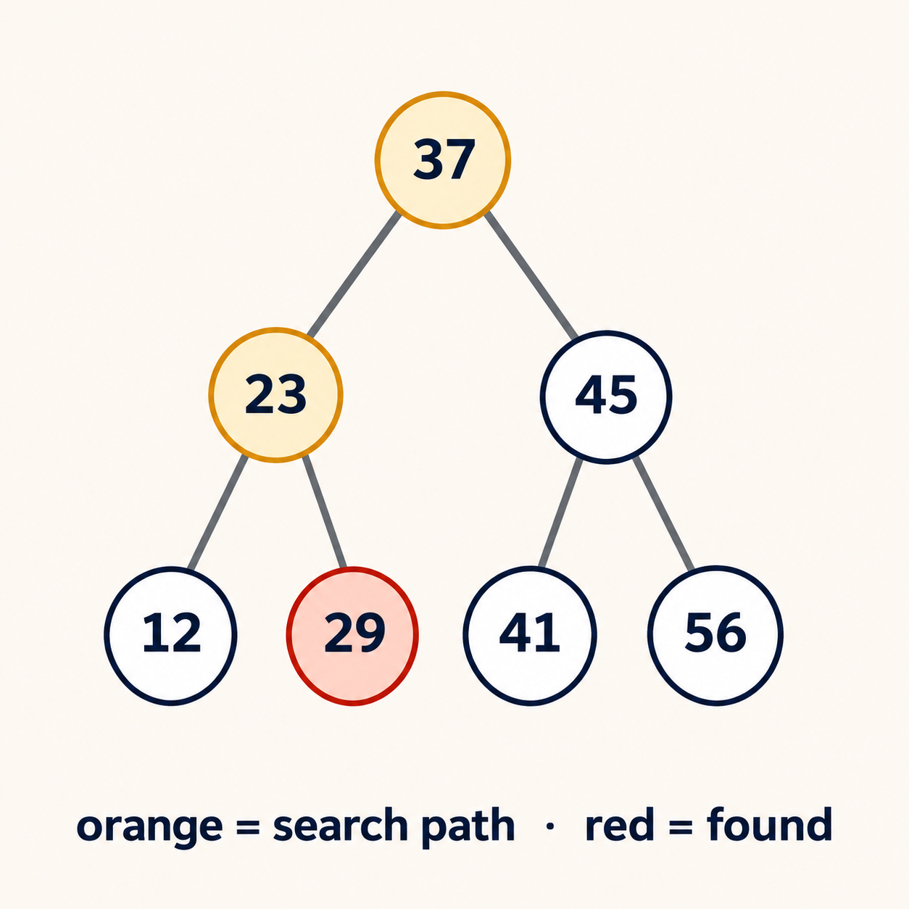
BST Insertion
Node* insert(Node* root, int key) {
if (root == NULL) return new Node(key);
if (key < root->data)
root->left = insert(root->left, key);
else if (key > root->data)
root->right = insert(root->right, key);
return root;
}Recursion continues until it reaches NULL
A smaller key continues left
A larger key continues right
NULL becomes the new node
An equal key leaves the tree unchanged
BST Insertion Example
| call | next call | return |
|---|---|---|
| insert(37, 33) | insert(23, 33) | 37 |
| insert(23, 33) | insert(29, 33) | 23 |
| insert(29, 33) | insert(NULL, 33) | 29 |
| insert(NULL, 33) | create 33 | 33 |
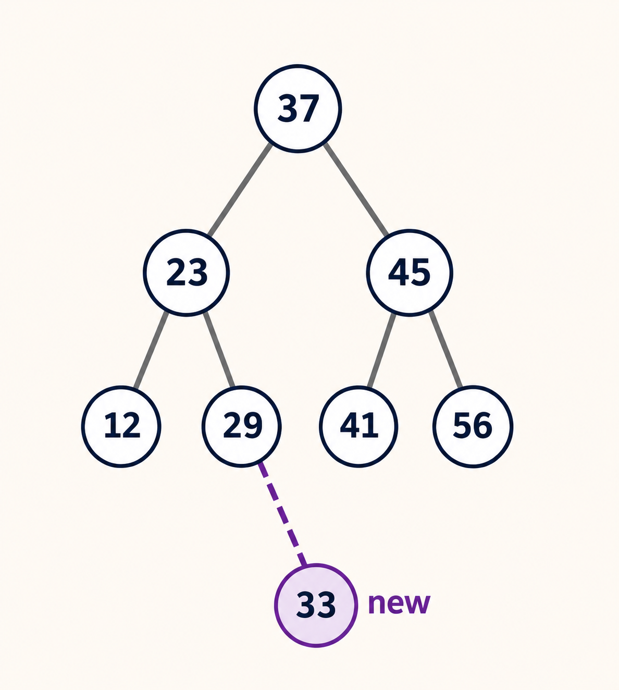
Tree Traversal Methods
Inorder
Traverse the left subtree
Visit the root
Traverse the right subtree
Preorder
Visit the root
Traverse the left subtree
Traverse the right subtree
Postorder
Traverse the left subtree
Traverse the right subtree
Visit the root
Level order
Visit a level from left to right
Continue to the next level
Inorder Traversal Algorithm
void inorder(Node* root) {
if (root == NULL) return;
inorder(root->left);
visit(root);
inorder(root->right);
}A BST produces keys in ascending order
Visit order: 1, 12, 23, 29, 37, 41, 45, 56
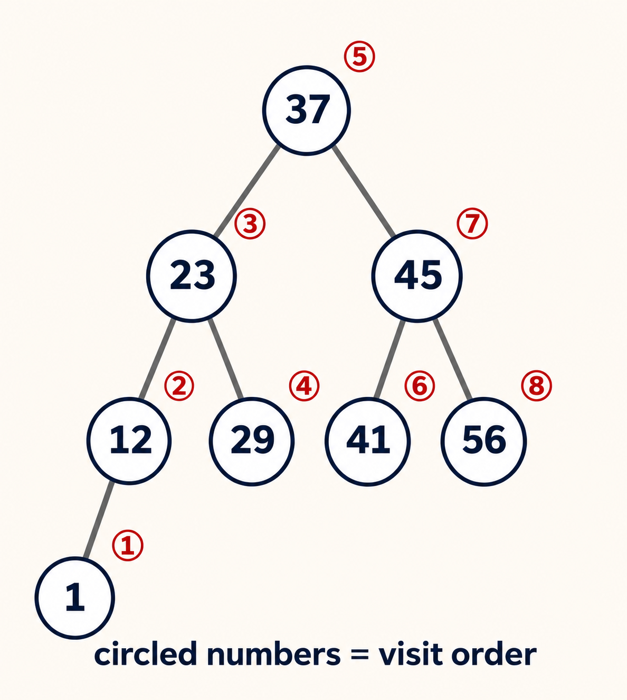
Preorder Traversal Algorithm
void preorder(Node* root) {
if (root == NULL) return;
visit(root);
preorder(root->left);
preorder(root->right);
}Each node is visited before either subtree
Visit order: 37, 23, 12, 1, 29, 45, 41, 56
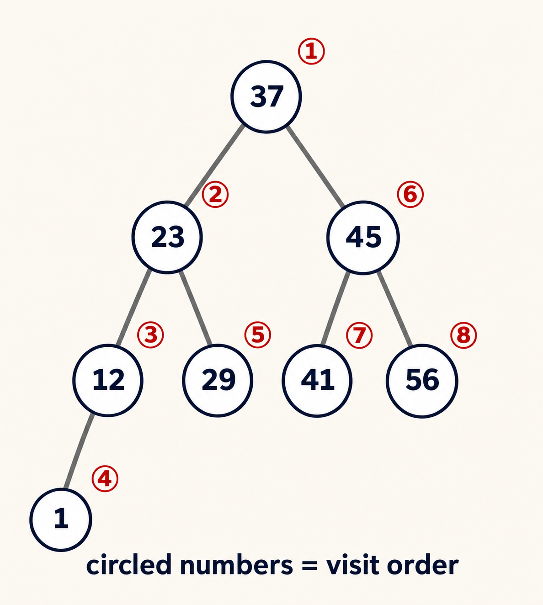
Postorder Traversal Algorithm
void postorder(Node* root) {
if (root == NULL) return;
postorder(root->left);
postorder(root->right);
visit(root);
}Each node is visited after both subtrees
Visit order: 1, 12, 29, 23, 41, 56, 45, 37
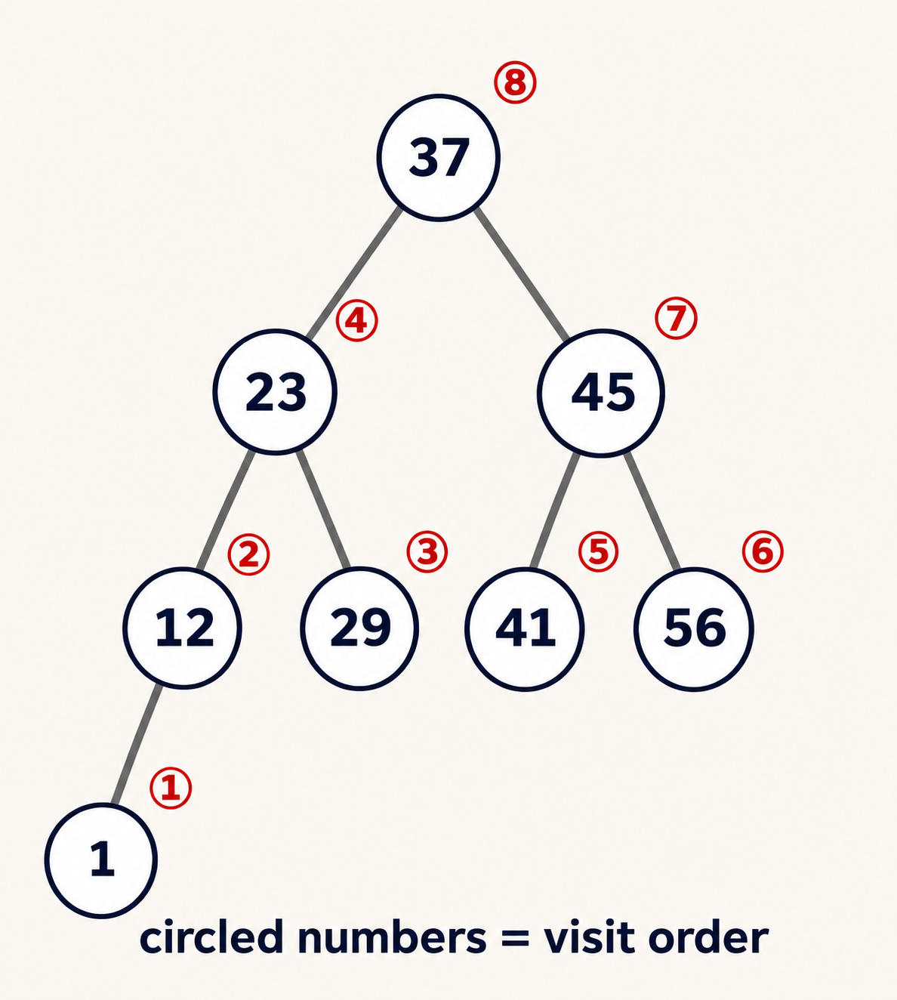
Level Order Traversal Algorithm
void processFront(std::queue<Node*>& q);
void levelorder(Node* root) {
if (root == NULL) return;
std::queue<Node*> q;
q.push(root);
while (!q.empty()) processFront(q);
}Processing the Queue Front
void processFront(std::queue<Node*>& q) {
Node* node = q.front();
q.pop();
visit(node);
if (node->left) q.push(node->left);
if (node->right) q.push(node->right);
}Level Order Queue Trace: First Three Nodes
| operation | queue | visited |
|---|---|---|
| push(37) | 37 | |
| pop(), visit(37) | 37 | |
| push(23), push(45) | 23 45 | 37 |
| pop(), visit(23) | 45 | 37 23 |
| push(12), push(29) | 45 12 29 | 37 23 |
| pop(), visit(45) | 12 29 | 37 23 45 |
| push(41), push(56) | 12 29 41 56 | 37 23 45 |
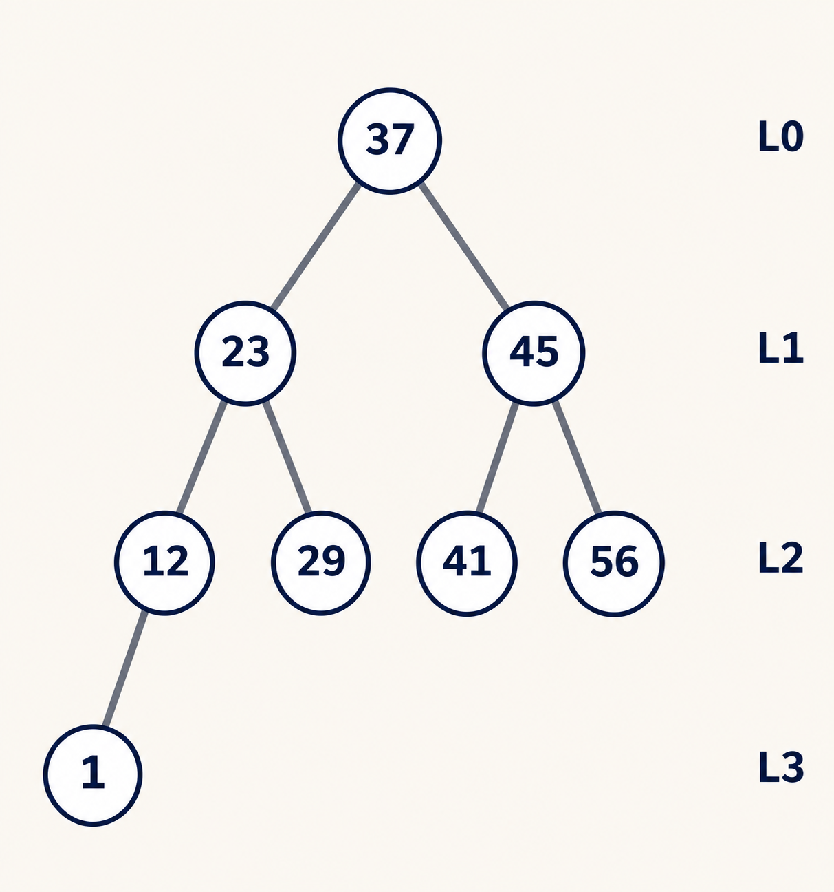
Level Order Queue Trace: Remaining Nodes
| operation | queue | visited |
|---|---|---|
| pop(), visit(12) | 29 41 56 | 37 23 45 12 |
| push(1) | 29 41 56 1 | 37 23 45 12 |
| pop(), visit(29) | 41 56 1 | 37 23 45 12 29 |
| pop(), visit(41) | 56 1 | 37 23 45 12 29 41 |
| pop(), visit(56) | 1 | 37 23 45 12 29 41 56 |
| pop(), visit(1) | 37 23 45 12 29 41 56 1 |
BST Deletion Cases
No child
Delete the node
Return NULL
One child
Save the child
Delete the node
Return the child
Two children
Copy the inorder successor value
Delete the successor from the right subtree
The returned subtree reconnects to its parent
BST Deletion Algorithm
Node* deleteNode(Node* root, int key) {
if (root == NULL) return NULL;
if (key < root->data)
root->left = deleteNode(root->left, key);
else if (key > root->data)
root->right = deleteNode(root->right, key);
else {
if (root->left == NULL) {
Node* child = root->right;
delete root;
return child;
}
if (root->right == NULL) {
Node* child = root->left;
delete root;
return child;
}
Node* succ = minValueNode(root->right);
root->data = succ->data;
root->right = deleteNode(root->right, succ->data);
}
return root;
}No Child: Delete 29
if (root->left == NULL) {
Node* child = root->right;
delete root;
return child;
}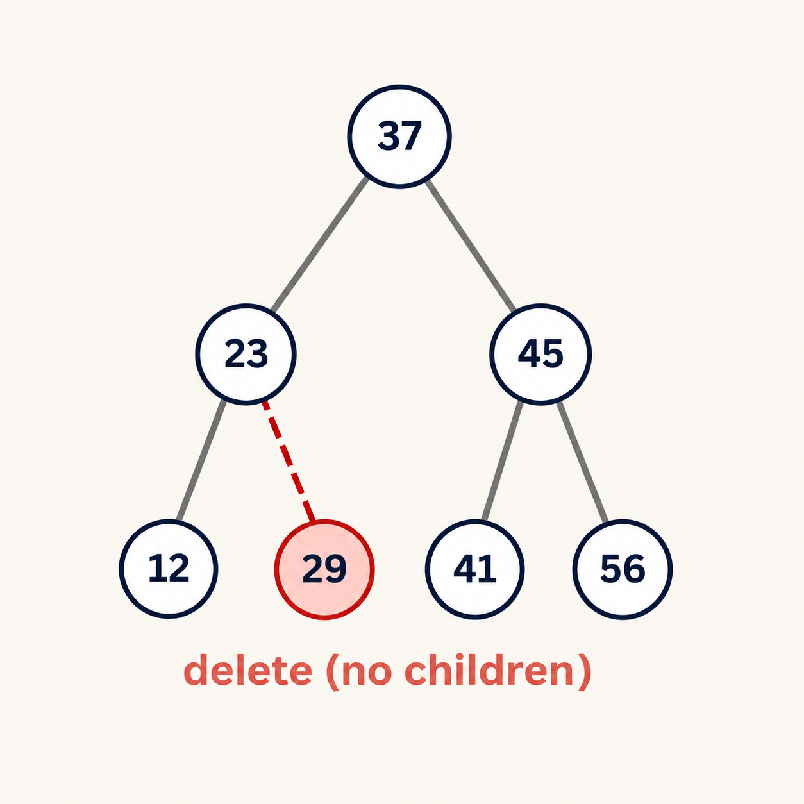
Node 29 has no children, so child is NULL
Returning NULL clears node 23's right link
One Child: Delete 12
if (root->right == NULL) {
Node* child = root->left;
delete root;
return child;
}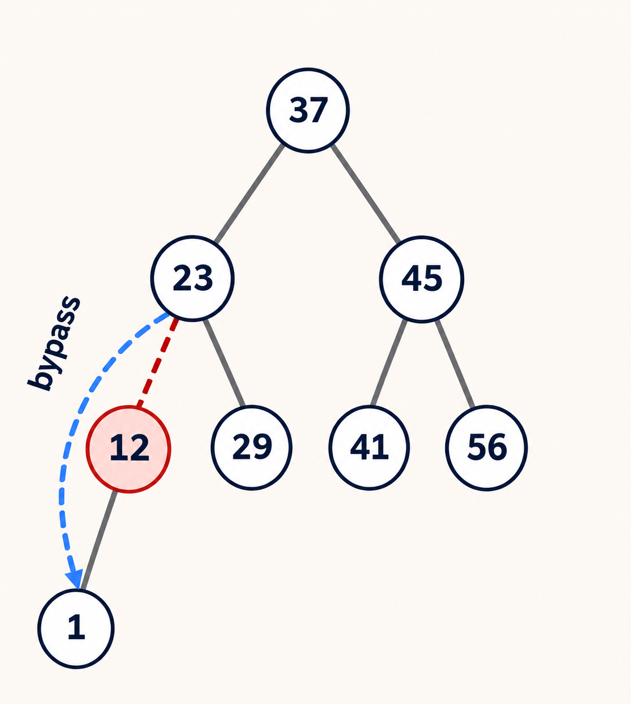
Node 12's only child is node 1
Returning node 1 makes it node 23's left child
Inorder Successor Helper
The successor is the smallest node in the right subtree
Node* minValueNode(Node* node) {
while (node != NULL && node->left != NULL) {
node = node->left;
}
return node;
}Two Children: Delete 23
Node* succ = minValueNode(root->right);
root->data = succ->data;
root->right = deleteNode(root->right, succ->data);Copy successor value 25 into node B
Deleting F:25 returns its right child G:27
Node E:29's left link becomes G:27
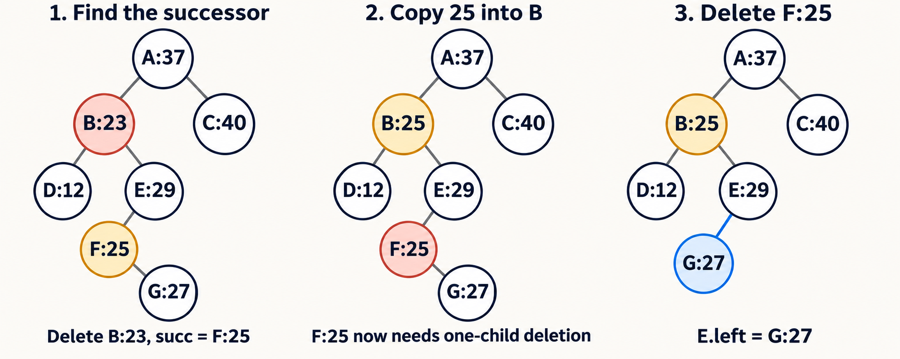
Height Algorithm
Height is the number of edges on the longest path from root to a leaf
An empty tree has height -1 in this implementation
A leaf has height 0
int height(Node* root) {
if (root == NULL)
return -1;
int left = height(root->left);
int right = height(root->right);
return 1 + std::max(left, right);
}Height Calculation
height(1) = height(29) = 0
height(41) = height(56) = 0
height(12) = 1 + max(0, -1) = 1
height(23) = 1 + max(1, 0) = 2
height(45) = 1 + max(0, 0) = 1
height(37) = 1 + max(2, 1) = 3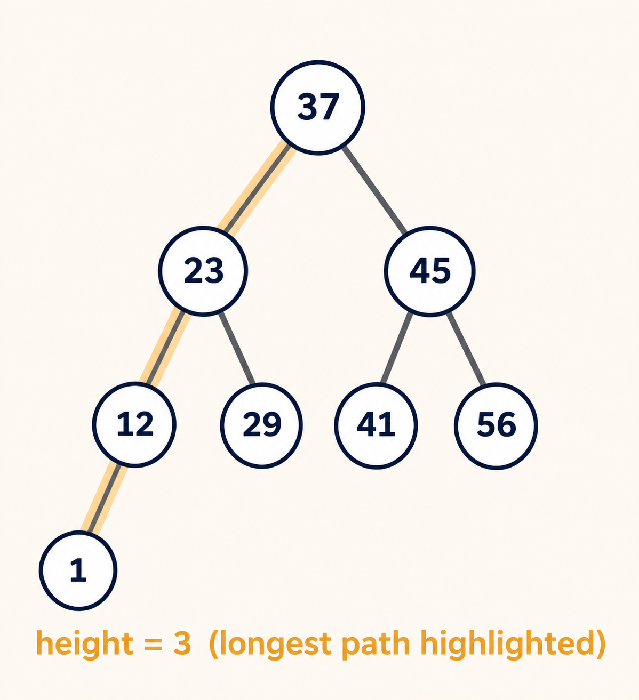
BST Efficiency and the Problem
Search, insertion, and deletion take O(h)
A balanced BST has height ≈ log₂(n), so its operations take O(log n)
A skewed BST has height ≈ n, so its operations take O(n)
Example: Insert 1, 2, 3, 4, 5
1
\
2
\
3
\
4
\
5Solutions to Maintain Efficiency
Solution 1: Randomized Insertion
Insert nodes in random order so the tree tends to stay roughly balanced
It does not guarantee a height bound
Solution 2: Balancing Mechanisms
AVL and red-black trees use rotations to keep their height O(log n)
B-trees use more than two children per node
B-trees rebalance with splits, merges, and redistribution
Solution 3: External Balancing: Rebuild from sorted values by choosing the middle value as each subtree root
Solution 4: Move recently accessed node toward the root
Splay trees provide O(log n) amortized time
One splay operation can still take O(n)
BST Operations Summary
BST property
Left subtree values are smaller
Right subtree values are greater
Operation cost
Every operation takes O(h)
A balanced tree gives O(log n)
A skewed tree gives O(n)
Search and insertion: Compare the key before choosing left or right
Deletion
A leaf returns NULL
A node with one child returns that child
A node with two children uses its inorder successor
Traversal and Balance Summary
Inorder: Produces sorted BST output
Preorder: Can copy a tree structure
Postorder: Can free a tree
Level order: Uses a queue
Self-balancing BSTs: AVL and red-black trees keep height O(log n)
B-trees
Store multiple keys per node
Allow multiple children per node